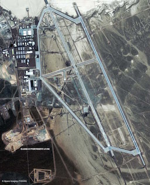
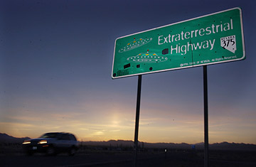

|
Area 51 is one of the most restricted location on earth. The government kept it a secret and tried to cover up the related incidents as much as possible, but truth finally surfaced. It is allegedly a military base located in Southern Nevada 100 miles north of Las Vegas. But we have evidence and witnesses that proves the remains of crashed UFO spacecrafts are stored at Area 51, a secret, highly classified military base about 150 miles from Las Vegas, where government scientists reverse-engineer the aliens' highly advanced technology. Thats where they innovated the Stealth fighter and Kevlar. UFO sightings in the area and testimony from a retired Army colonel confirms he was given access to extraterrestrial materials gathered from an alien spacecraft that crashed in Roswell, N.M. The government has developed advanced aircraft and weapons systems at nearby Nellis Air Force Base, including Stealth bombers and reconnaissance planes. They keep saying that the details of Area 51 are classified for purposes of national security - which supports the fact that the military is hiding aliens or alien spacecraft. |
 |
|  |
It is said to a military base owned by US government and operated by US Air force. |
All specifics regarding the facility and the projects housed there are classified. What is known is the Air Force, the CIA and Lockheed have used the base as a staging ground for test flights of experimental, secret aircraft, also known as black aircraft. The base served as the development and testing facility for cutting edge aircraft technology from the U-2 spy plane to the F-117A Stealth Fighter. Where did all this innovations and ideas came from. These are results of the extraterrestial knowledge. It shows that the aliens are far more technologically advanced and we are in great danger.